TargetDisplay ist die Bildschirmanzeige an den Schießständen unseres Vereins. Eine Kamera blickt schräg auf die Zielscheibe, und die App rechnet dieses Bild automatisch so um, dass die Scheibe gerade von oben zu sehen ist – so, als würde man direkt davorstehen. Das Gerät läuft auf einem kleinen Touchscreen-Computer direkt am Stand und wird ausschließlich mit dem Finger bedient, eine Maus oder Tastatur wird nicht benötigt.
Neben der reinen Live-Ansicht bietet TargetDisplay zwei Zoomstufen, einen „Blinken“-Vergleichsmodus zum Erkennen neuer Einschusslöcher sowie mehrere eingebaute Wettkampf-Timer. Ein PIN-geschützter Einstellungsbereich erlaubt Standaufsichten außerdem, das Gerät direkt am Stand neu zu kalibrieren.
Kapitel 1 beschreibt die Bedienelemente für den täglichen Gebrauch. Kapitel 2, Administrativer Bereich, richtet sich an Standaufsichten.
Der Hauptbildschirm
Der Hauptbildschirm ist die Ansicht, die nach dem Einschalten des Geräts dauerhaft zu sehen ist. Links liegen die Bedienelemente, rechts das entzerrte Kamerabild der Scheibe.
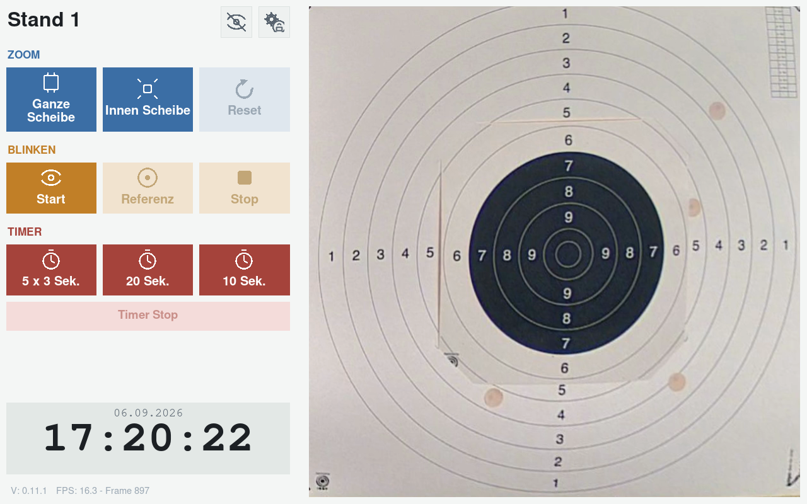
Die Nummerierung beginnt in jeder Gruppe neu bei 1 – gemeint ist die Position innerhalb dieser Gruppe, nicht eine durchlaufende Zählung über den ganzen Bildschirm.
Kopfzeile
- 1Standname
Oben links, z. B. „Stand 1“. Zeigt den aktuell angezeigten Schießstand. Rein informativ, kein Bedienelement.
- 2Video-aus-Symbol
Auge mit Schrägstrich, oben rechts (linkes der beiden Symbole). Blendet das Kamerabild aus und zeigt das Vereinswappen. Erneuter Klick schaltet zurück. Solange ausgeblendet, sind Zoom, Blinken und Timer gesperrt.
- 3Einstellungen-Symbol
Zahnrad mit Schloss, oben rechts. Öffnet den PIN-geschützten Administrativen Bereich, siehe Kapitel 2.
Gruppe Zoom
- 1Ganze Scheibe
Zeigt die komplette Zielscheibe in der Übersicht – die Standardansicht.
- 2Innen Scheibe
Vergrößert auf den inneren, hochwertigeren Bereich der Scheibe (eigener, separat kalibrierter Ausschnitt).
- 3Reset
Setzt Zoomstufe und eine manuelle Verschiebung (siehe Punkt 4) auf „Ganze Scheibe“ zurück. Nur aktiv, wenn es etwas zurückzusetzen gibt.
- 4Tippen auf das Kamerabild
Erster Tipp legt einen Ausschnitts-Mittelpunkt fest; Tippen nahe einem Bildrand verschiebt den sichtbaren Ausschnitt schrittweise dorthin. Über „Reset“ (Punkt 3) kommt man wieder zur zentrierten Ansicht zurück.
Gruppe Blinken
- 1Start
Merkt sich das aktuelle Kamerabild als Referenz und beginnt das Blinken zwischen Referenz und Live-Bild.
- 2Referenz
Nimmt eine neue Referenzaufnahme auf, ohne den Blinken-Modus zu verlassen.
- 3Stop
Beendet das Blinken, es wird wieder ausschließlich das Live-Bild gezeigt.
Gruppe Timer
- 15 × 3 Sek.
Fünf Durchgänge im Wechsel, Scheibe 3 Sekunden sichtbar, 7 Sekunden verdeckt.
- 220 Sek.
Eine einzelne Zeitscheibe von 20 Sekunden.
- 310 Sek.
Eine einzelne Zeitscheibe von 10 Sekunden.
- 4Timer Stop
Bricht einen laufenden Timer vorzeitig ab. Nur während eines laufenden Timers farbig/aktiv.
Fußbereich
- 1Datum/Uhrzeit
Zeigt Uhrzeit groß, Datum darüber. Rein informativ.
- 2Versions-/FPS-Anzeige
Unten links, kleine graue Schrift: installierte Version sowie laufende Bildwiederholrate/Bilderanzahl. Für die Fehlersuche, ohne Bedeutung im Normalbetrieb.
Zoom im Detail
Ganze Scheibe und Innen Scheibe schließen sich in der Wirkung gegenseitig aus – immer ist genau eine Stufe tatsächlich aktiv. Das sieht man den Buttons farblich aber nicht an: Beide bleiben durchgehend kräftig blau, da sich jederzeit erneut zwischen ihnen wechseln lässt. Ist eine Zoomstufe aktiv und man tippt zusätzlich auf das Bild, verschiebt sich der Ausschnitt innerhalb dieser Stufe, ohne das Zoom-Verhältnis zu ändern. Reset bringt beides in einem Schritt zurück – und ist der einzige der drei Buttons, dessen Farbe den Zustand tatsächlich widerspiegelt (siehe Abb. 2).
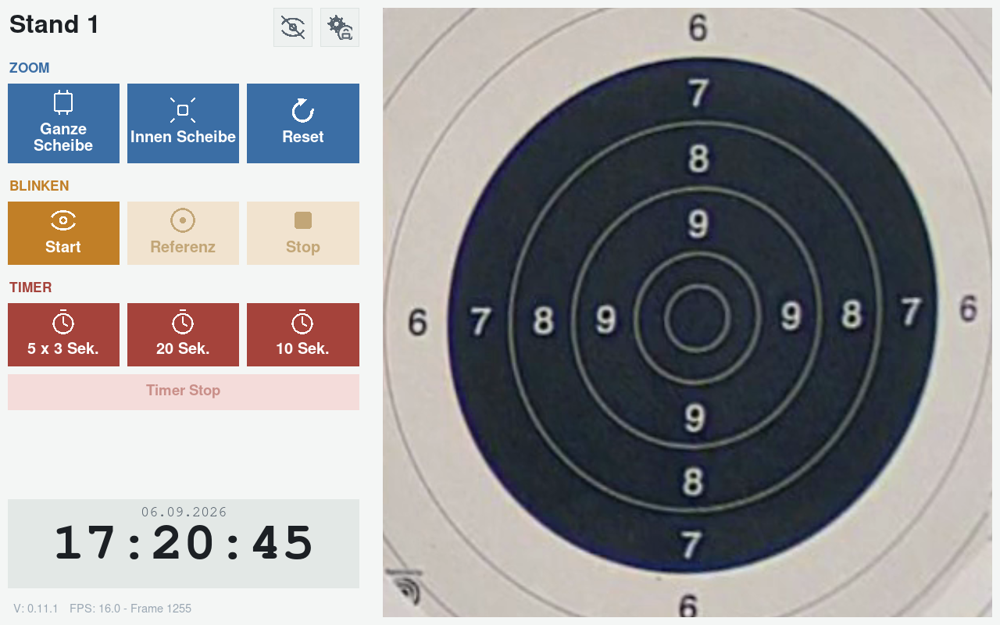
„Blinken“-Vergleichsmodus im Detail
Das Bild wechselt sekündlich zwischen dem festgehaltenen Referenzbild und dem aktuellen Live-Bild. Löcher, die dabei „aufblinken“, sind neu – typischer Anwendungsfall: Referenz direkt nach einer geschossenen Serie erneut auslösen, um die nächste Serie einzeln sichtbar zu machen. Während des Blinkens sind die Timer-Buttons gesperrt und dabei sichtbar ausgegraut. Der Video-aus-Knopf ist ebenfalls gesperrt, ändert dabei aber äußerlich nicht sein Aussehen – er sieht weiterhin normal aus, reagiert aber nicht auf Tippen. Zoom bleibt weiterhin bedienbar. Stop gibt Timer und Video-aus-Knopf wieder frei.
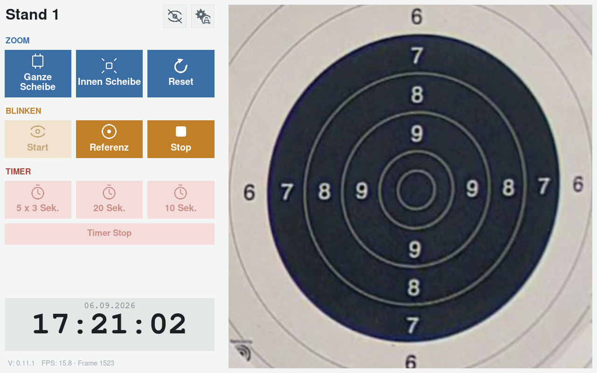
Wettkampf-Timer im Detail
20 Sek. und 10 Sek. laufen nach demselben einfachen Muster ab: 7 Sekunden roter Countdown zur Vorbereitung, dann grün für die Sichtzeit, anschließend kurz (3 Sekunden) wieder rot als Stopp-Phase, danach automatisches Ende.
5 × 3 Sek. beginnt ebenfalls mit der 7-Sekunden-Vorbereitungszeit in Rot, wiederholt danach aber fünfmal denselben Wechsel: 3 Sekunden grün (Scheibe sichtbar, mit Countdown und Durchgangszähler), gefolgt von 7 Sekunden rot (Scheibe verdeckt, ebenfalls mit Countdown und Durchgangszähler). Nach dem fünften Durchgang folgt, genau wie bei den anderen beiden Varianten, dieselbe kurze (3 Sekunden) rote Stopp-Phase, danach schaltet der Timer automatisch ab.
Während eines laufenden Timers wird kein Kamerabild angezeigt und Zoom/Blinken/Video-aus sind gesperrt.
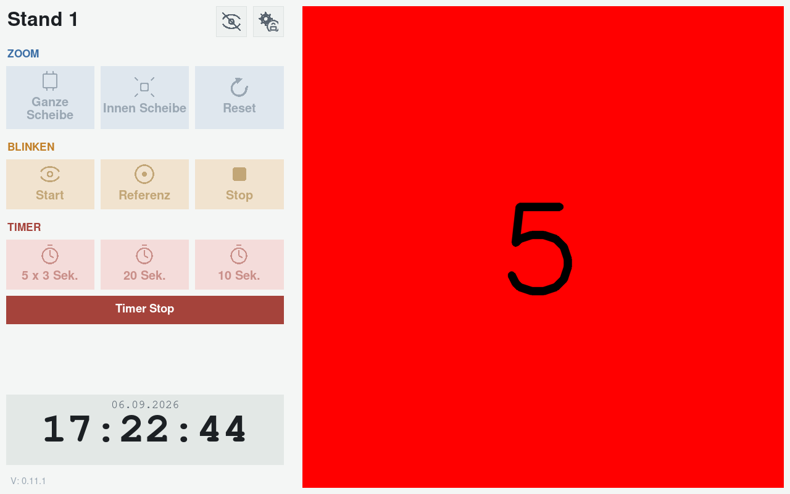
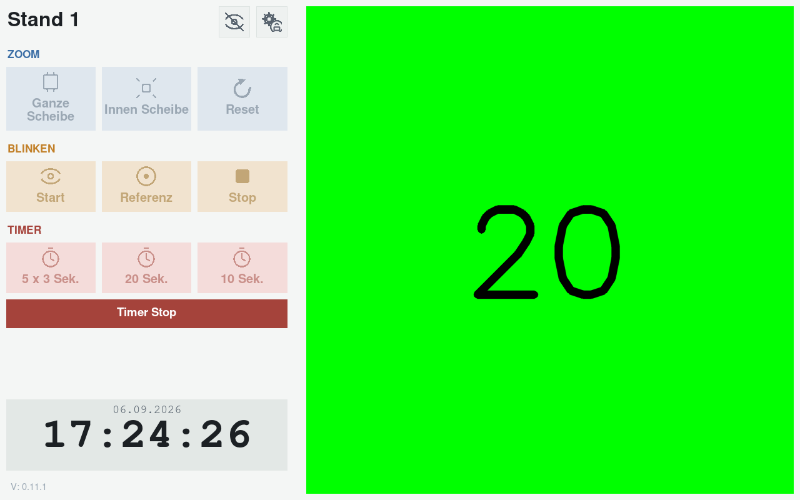
„Video aus“ im Detail
Ein Klick auf das Augen-Symbol (Kopfzeile, Punkt 2) blendet das Kamerabild aus und zeigt das Vereinswappen auf schwarzem Grund – etwa wenn niemand am Stand ist. Uhrzeit/Datum laufen normal weiter. Das Symbol wechselt dabei auf ein Auge ohne Schrägstrich; ein erneuter Klick darauf schaltet das Live-Bild wieder ein.
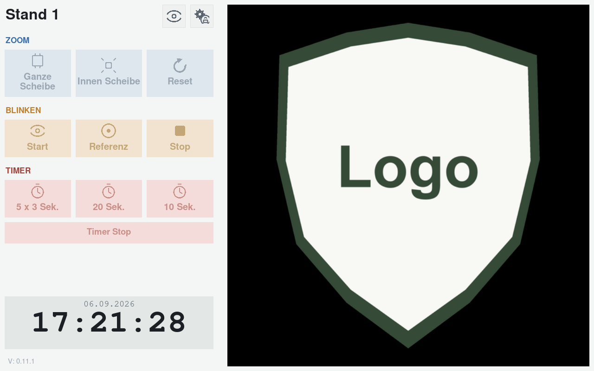
Administrativer Bereich
Dieser Abschnitt richtet sich an Standaufsichten, nicht an normale Vereinsmitglieder. Alle Funktionen sind über das Zahnrad-Symbol (Kopfzeile, Punkt 3) erreichbar und durch eine numerische PIN geschützt.
Wichtig: Der PIN-Schutz ist bewusst kein Hochsicherheitsmechanismus (keine Kontosperre nach Fehlversuchen) – er soll lediglich zufälliges Herumtippen von Passanten verhindern.
PIN-Eingabe
Nach Klick auf das Zahnrad erscheint das PIN-Tastenfeld:
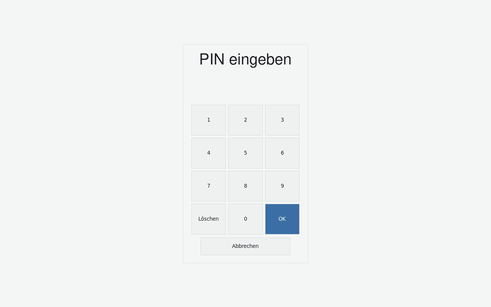
- 1Ziffernblock 0–9
Eingabe der PIN (4–6-stellig). Ziffern werden als Sternchen dargestellt.
- 2Löschen
Setzt die aktuelle Eingabe zurück auf leer.
- 3OK
Bestätigt die Eingabe. Bei falscher PIN erscheint kurz „falsch“ in Rot.
- 4Abbrechen
Bricht ab, kehrt zum Hauptbildschirm zurück.
Einstellungen-Menü
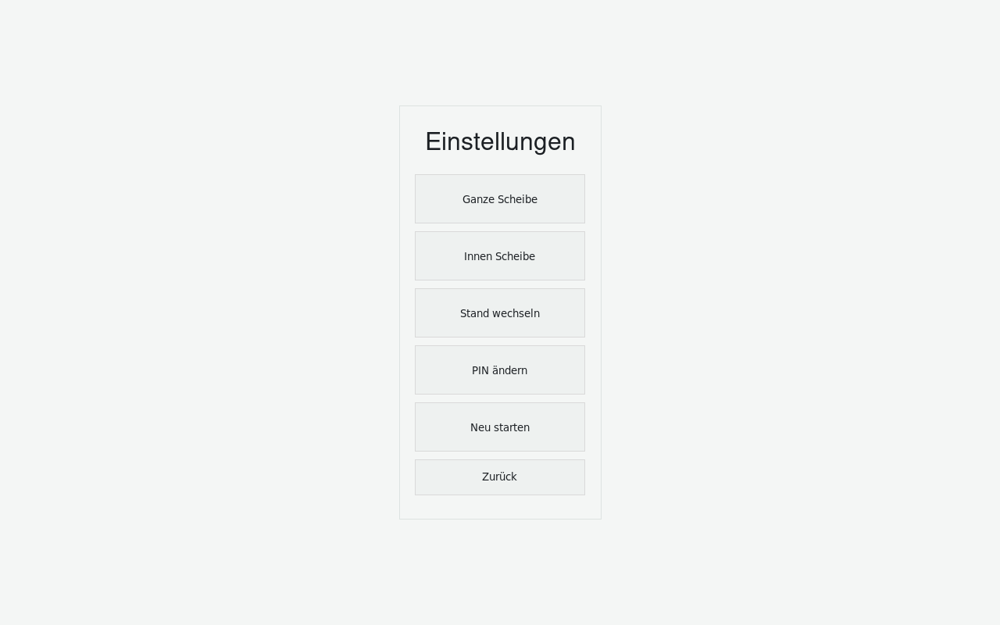
- 1Ganze Scheibe
Öffnet den Ausschnitte-Editor zur Neukalibrierung dieses Ausschnitts.
- 2Innen Scheibe
Öffnet denselben Editor für den Detailzoom-Ausschnitt.
- 3Stand wechseln
Öffnet die Stand-Auswahl, um dieses Gerät auf einen anderen Schießstand umzustellen.
- 4PIN ändern
Startet den Dialog zum Ändern der Einstellungs-PIN.
- 5Neu starten
Öffnet die Neustart-Bestätigung.
- 6Zurück
Verlässt das Menü ohne Änderung.
Wichtig: Wird über „Ganze/Innen Scheibe“, „Stand wechseln“ oder „PIN ändern“ tatsächlich etwas gespeichert, startet das Gerät danach automatisch neu – einheitlich für alle vier Aktionen, auch wenn ein Neustart für die PIN-Änderung allein technisch nicht nötig wäre. Ein Abbruch in einem Unterdialog führt dagegen nur einen Schritt zurück zu diesem Menü.
Ausschnitte-Editor (Kalibrierung)
Hier werden die vier Eckpunkte festgelegt, die den schrägen Kamerablick in ein gerades Top-down-Bild umrechnen – getrennt für „Ganze Scheibe“ und „Innen Scheibe“. Nötig bei verschobener Kamera/Scheibe oder bei der Ersteinrichtung eines neuen Standes.
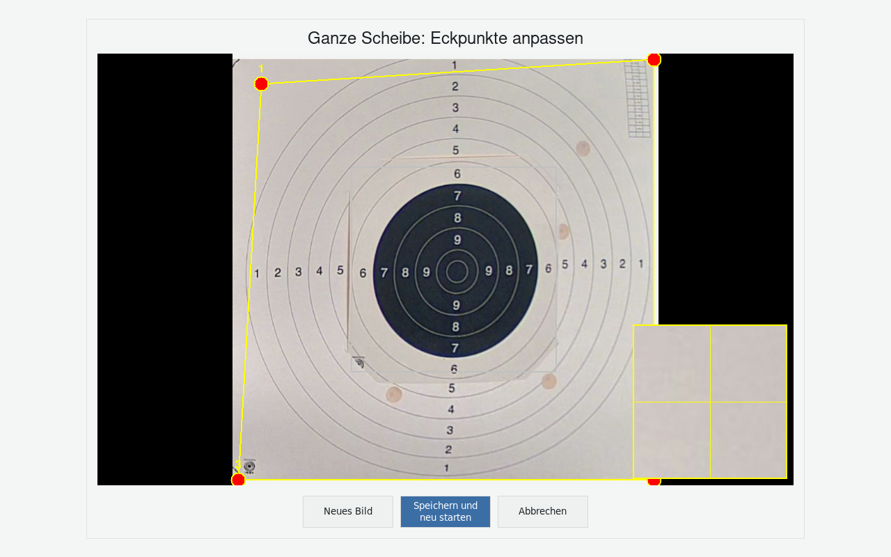
- 1Titel
Zeigt an, welcher Ausschnitt bearbeitet wird.
- 2Vier nummerierte Eckpunkte
Per Fingertipp greifbar und auf eine Scheibenecke ziehbar. Eine gelbe Linie verbindet sie zur Kontrolle; der jeweils andere, bereits kalibrierte Ausschnitt wird hellgrau zur Orientierung eingeblendet.
- 3Lupe
Blendet beim Ziehen eines Punkts automatisch eine vergrößerte Detailansicht ein (springt in die gegenüberliegende Ecke, um den Punkt nie zu verdecken) – erleichtert millimetergenaue Platzierung.
- 4Neues Bild
Holt ein frisches Kamerabild, ohne gesetzte Punkte zu verwerfen.
- 5Speichern und neu starten
Übernimmt die neue Positionierung dauerhaft, startet das Gerät neu.
- 6Abbrechen
Verwirft alle Änderungen, zurück zum Einstellungen-Menü.
Stand wechseln
Erlaubt, ein Gerät auf einen anderen Schießstand (mit eigener Kamera) umzustellen. Die Standliste wird zentral gepflegt und ist auf allen Geräten identisch – welcher Stand angezeigt wird, wird pro Gerät einzeln hier gewählt.
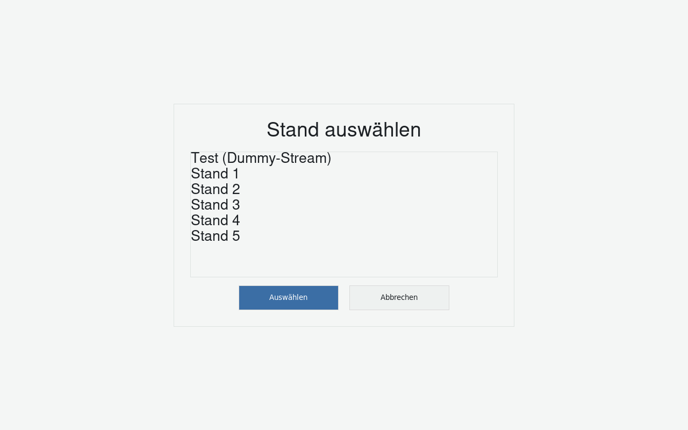
- 1Liste der Stände
Ein Fingertipp markiert einen Eintrag.
- 2Auswählen
Übernimmt den markierten Stand; Gerät verbindet sich mit dessen Kamera und startet neu.
- 3Abbrechen
Zurück zum Einstellungen-Menü ohne Änderung.
Wichtig: Nach einem Stand-Wechsel muss in aller Regel auch die Kalibrierung (siehe oben) für den neuen Stand geprüft werden, da sich Kamerawinkel und -position je Stand unterscheiden.
PIN ändern
Anders als die übrigen Unterabschnitte hier ist dies kein einzelner Bildschirm mit festen Bedienelementen, sondern ein Ablauf über mehrere Schritte/Bildschirme hinweg:
- Zunächst muss die aktuell gültige PIN eingegeben werden (dasselbe Tastenfeld wie oben) – verhindert, dass jemand, der zufällig ans offene Menü gelangt, die PIN einfach überschreibt.
-
Danach erscheint das Tastenfeld erneut, Titel „Neuen PIN eingeben (4-6 Ziffern)“:
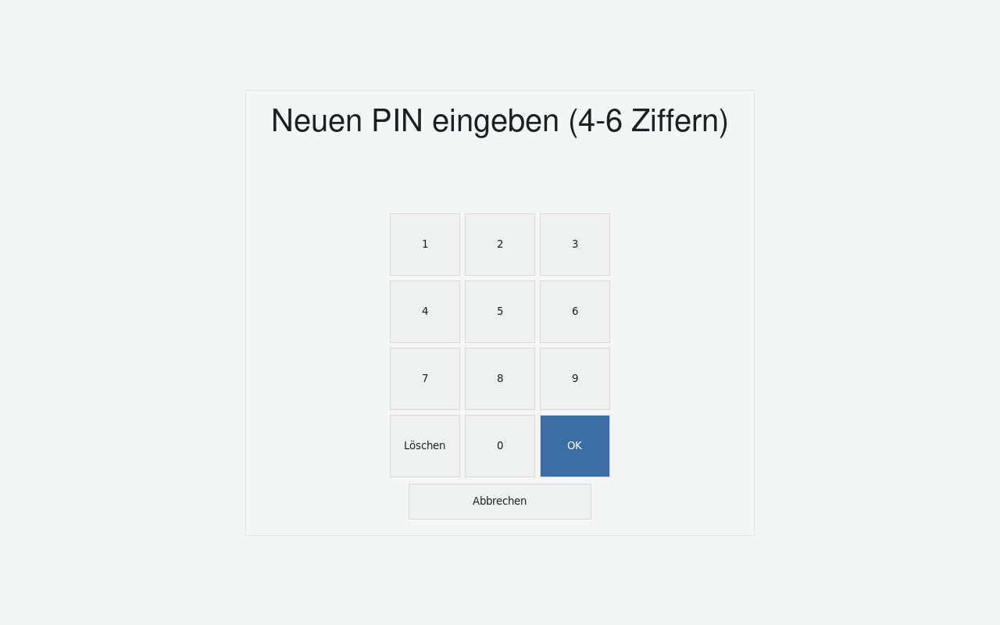
Abb. 11 – Neuen PIN eingeben. - Die neue PIN muss zur Kontrolle ein zweites Mal eingegeben werden. Stimmen beide Eingaben nicht überein, erscheint kurz „PINs stimmen nicht überein“, und es geht zurück zur neuen-PIN-Eingabe – die bereits bestätigte aktuelle PIN muss dafür nicht erneut eingegeben werden.
- Nach zweimal übereinstimmender Eingabe wird die neue PIN gespeichert. Genau wie bei den anderen Einstellungsänderungen startet das Gerät danach automatisch neu, damit der neue PIN sauber übernommen wird.
- Abbrechen ist in jedem Schritt möglich und verwirft die Änderung.
Gerät neu starten
Über „Neu starten“ im Einstellungen-Menü lässt sich das Gerät gezielt neu booten, z. B. wenn die Kamera-Verbindung dauerhaft hängt.
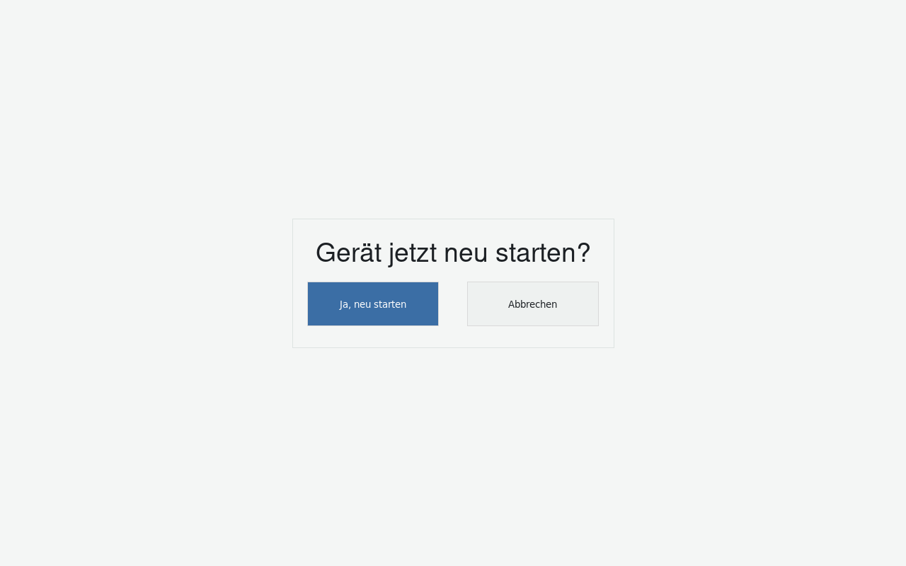
- 1Ja, neu starten
Startet das Gerät sofort neu.
- 2Abbrechen
Zurück zum Einstellungen-Menü ohne Neustart.
Kurzübersicht Ersteinrichtungs-Assistent
Ein fabrikneues bzw. zurückgesetztes Gerät zeigt beim allerersten Start automatisch einen geführten Assistenten, bevor der normale Hauptbildschirm erreichbar ist. Er läuft in exakt dieser Reihenfolge ab und lässt sich nicht abbrechen:
- Stand auswählen – identisch zum Dialog „Stand wechseln“, nur ohne Abbrechen-Button.
- Ausschnitte kalibrieren – zunächst „Ganze Scheibe“, danach „Innen Scheibe“, jeweils identisch zum Ausschnitte-Editor (ohne Abbrechen; der Speichern-Button heißt hier schlicht „Speichern“, da der Assistent ohne Neustart weiterläuft).
- PIN festlegen – identisch zum Dialog „PIN ändern“, nur ohne vorherige Abfrage einer aktuellen PIN: Das Gerät startet mit dem eingebauten Standard-PIN „1234“, den der Assistent an dieser Stelle zwingend durch einen selbst gewählten PIN ersetzen lässt.
Erst nach allen drei Schritten erscheint der normale Hauptbildschirm aus Kapitel 1.
Bei Problemen
Lässt sich ein Problem nicht durch einen einfachen Geräteneustart beheben (siehe Abschnitt „Gerät neu starten“), wenden Sie sich bitte an: